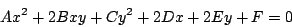
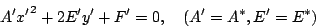
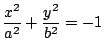
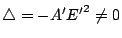

| |
空間的一個重要本質是它完美的對稱性和均勻性，它在坐標解析幾何中的反映就是所有正交坐標系（亦稱之為笛卡兒坐標系）之間的互換等價性。當我們用坐標解析法去研討幾何事物時，一定要銘記在心，只有那種和坐標系的選取無關者才具有本質的幾何內涵。例如當我們在研討二次曲線時，同一條二次曲線在兩個不同的正交坐標系 {O; x,y} 和 {O'; x',y'}
中的方程式各異。設其分別為

和
所以上述兩個方程式的系數比例組即
{A:B:C:D:E:F} 和
{A':B':C':D':E':F'} 其本身並不具有本質的幾何意義，而只有在坐標變換之下保持不變的那種系數組合才會具有本質性的幾何意義。由此可見，要研討一般二次曲線的幾何就自然得從其方程式系數的不變組合（通常叫做方程式的坐標變換不變量）的系統研討著手。長話短說，二次方程式在正交變換和平移變換之下具有下述三個基本不變量，即恆有：
通常分別用符號 H, δ,
 表示上述三個基本不變量。再者，所有其他的不變量都可以表達成上述三個基本不變量
的函數。在此且先說明 H, δ 和
在坐標變換之下的不變性： 表示上述三個基本不變量。再者，所有其他的不變量都可以表達成上述三個基本不變量
的函數。在此且先說明 H, δ 和
在坐標變換之下的不變性：
1. 平面上的任給保長變換都可以由平移和正交（轉軸）變換組合而成。相應地，平面上任給兩個正交坐標系 {O;x,y} 和 {O';x',y'} 之間的坐標變換也可以分解成平移和正交坐標變換的組合，如 [圖 8-10] 所示。
[ 圖 8-10 ]
2. 設 P 是平面上任給一點，它在坐標系 {O;x,y},
{O';x*,y*}
和 {O';x',y'} 中的坐標分別為 (x,y), (x*,y*) 和 (x',y')，即有
設
,
,
（或 ），則有
3. 將上式代入一個二次曲線在 {O;x,y} 中的方程式
展開，集項而得者乃是它在 {O';x',y'} 中的方程式。由此，比較系數即得
4. 由上述二次曲線的系數的坐標變換式，即可直接驗証 H 和 δ
的不變性如下，即：
而用直接展開可得
在上式中，
和
 合起來當然就是 B2，而
B'2 中有底線的項又剛好和 -A'C' 中有底線的項相消，所以即得 合起來當然就是 B2，而
B'2 中有底線的項又剛好和 -A'C' 中有底線的項相消，所以即得
5. 我們當然可以用同樣的直接代換方法來驗証
的不變性，但是其中的運算頗為繁複。下面將提供有一個較佳的方法，而且亦可以突出矩陣運算的優越性。一個二次曲線可以用下述矩陣形式表達：
另一方面，前述的坐標變換式在矩陣形式下亦可以寫成
所以由直接代換可得
亦即
由此可見，用行列式的乘法公式即有
將上述基本不變量的理解再和坐標變換結合運用，就可以有系統地把二次曲線加以幾何分類。例如當
的情形，即可求得一個平移變換：
使得 D*=E*=0，亦即由下述線性方程組
即可求得上述平移中的 {h,k} 。這樣，原給曲線在坐標系
{O';x*,y*} 中的方程式就變為（注意：平移變換不會改變 A, B, C 的值）
其中
。接著我們還可以用適當的轉軸變換，即
使得
，亦即
（若取
或
者，則可以保持
A'-C' 和 A-C 同號，試証之。）則曲線在坐標系
{O';x',y'}
中的方程式為
而上述 {A',C'} 是可以由方程組
直接求得，亦即
。
[註]：若一條二次曲線在變換
之下保持不變，則稱之為具有「心對稱」者。把這個變換代入二次曲線的方程式中，即有
由此可見一條二次曲線具有心對稱的充要條件就是 D=E=0 。當
時，我們可以求得平移變換使得 D*=E*=0，所以在這個情況二次曲線是具有心對稱者；但若果
，則情況會是怎樣？我們可以用下面的分析來研討：
設 ，我們可以先用一個轉軸變換
使得 B*=0 。因為
，所以 A* 和 C* 之中必有一個為零，不妨由 θ 的適當選取（即使得 A-C, A*-C* 同號或異號的 θ）使得 C*=0 。所以經過上述轉軸變換之後，二次曲線在坐標系 {O;x*,y*} 的方程式為
再用一個平移變換
, y*=y' 即有

上式中的 {A',E'} 可以用不變量求得：H=A',
，即
。當 ，亦即
時，這是一條拋物線，而且還可以用平移變換 x'=x'',
將方程式簡化為
A'x''2+2E'y'' =0 。當 E'=0，亦即
時，則二次曲線會蛻化至一對直線（實或虛）的情形。
總結上述分析，我們可以用不變量 H, δ,
把一般的二次曲線作系統分類如下：
第一種
：在這種情形，二次曲線的方程式經過適當的平移、轉軸變換後就可以寫成
- (1)
- 若 A', C' 同號（即
）而且與 F'
異號（即
），則屬于橢圓的類別
 ； ；
- (2)
- 若 A', C', F' 同號（即 ,
），則屬于虛橢圓的類別
；
- (3)
- 若 A', C' 同號（即 ）而且
F'=0（即
），則二次曲線會蛻化為一點
（或可當做交于一實點的一對虛直線）；
- (4)
- 若 A', C' 異號（即 ）而且
（即
），則屬于雙曲線的類別
 ； ；
- (5)
- 若 A', C' 異號（即 ）而且
F'= 0（即
），則屬于一對相交直線的類別
；
第二種
：在這種情形，二次曲線的方程式經過適當的轉軸、平移變換後就可以寫成
- (6)
- 若 （即
），則屬于拋物線的類別
y=ax2；
- (7)
- 若 E'=0（即
），則屬于一對（平行，相重或虛）直線的類別
x2=a2, x2=0 或 x2=-a2 。
[註]：由上述分類可以直接看到，一條二次曲線會蛻化為一對（平行，相重，相交或虛）直線的充要條件就是
。
|
|
|